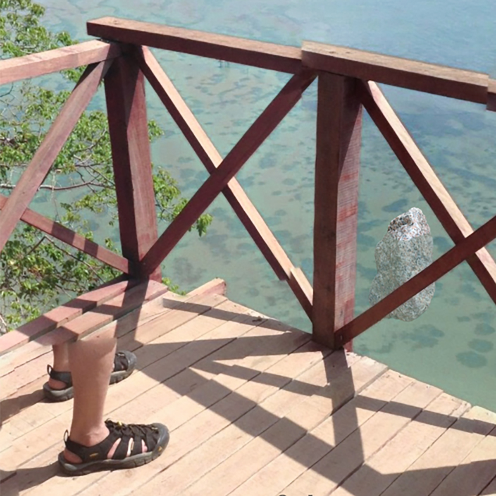
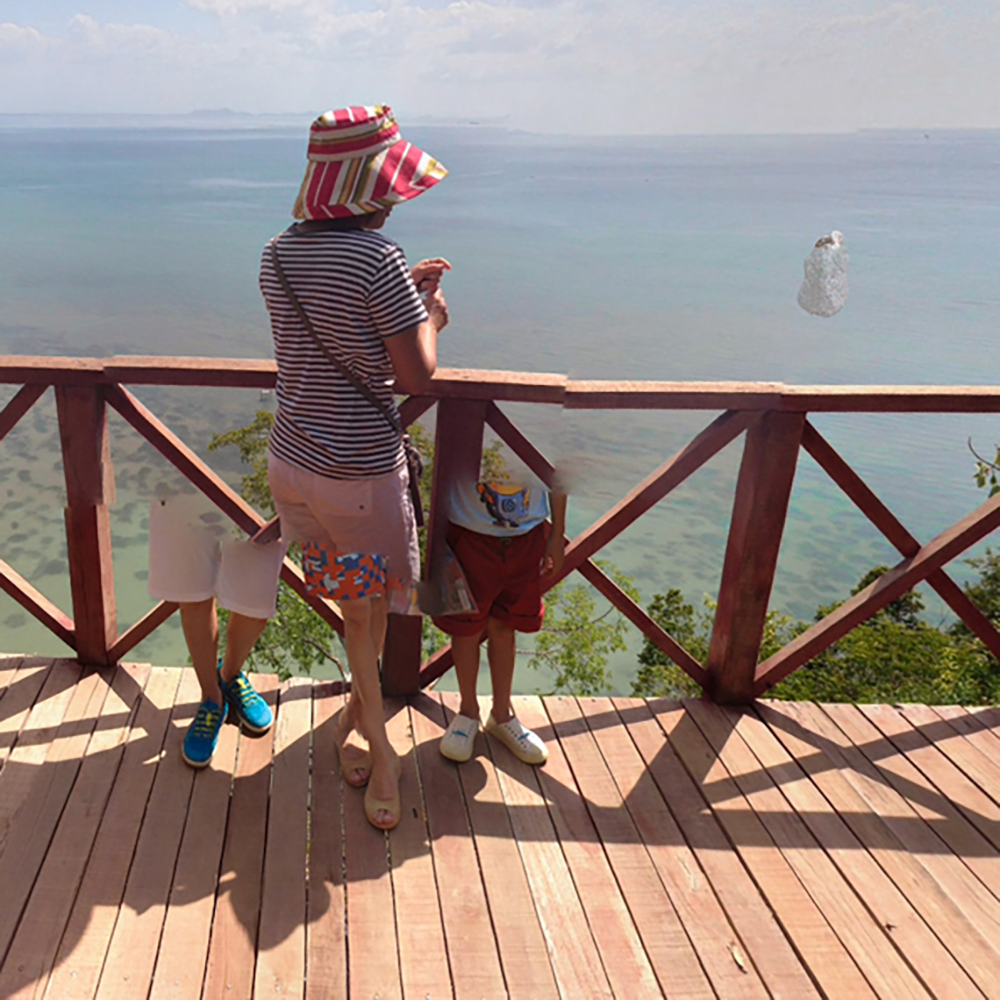
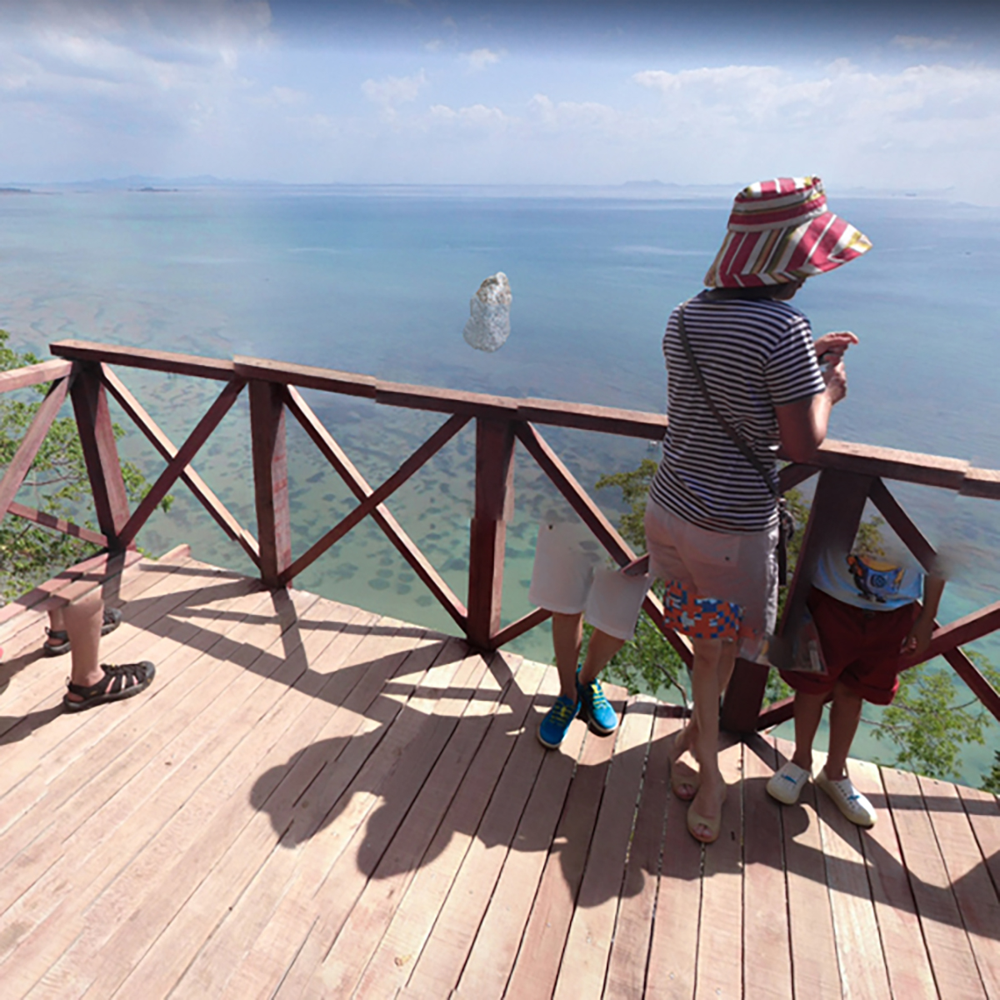
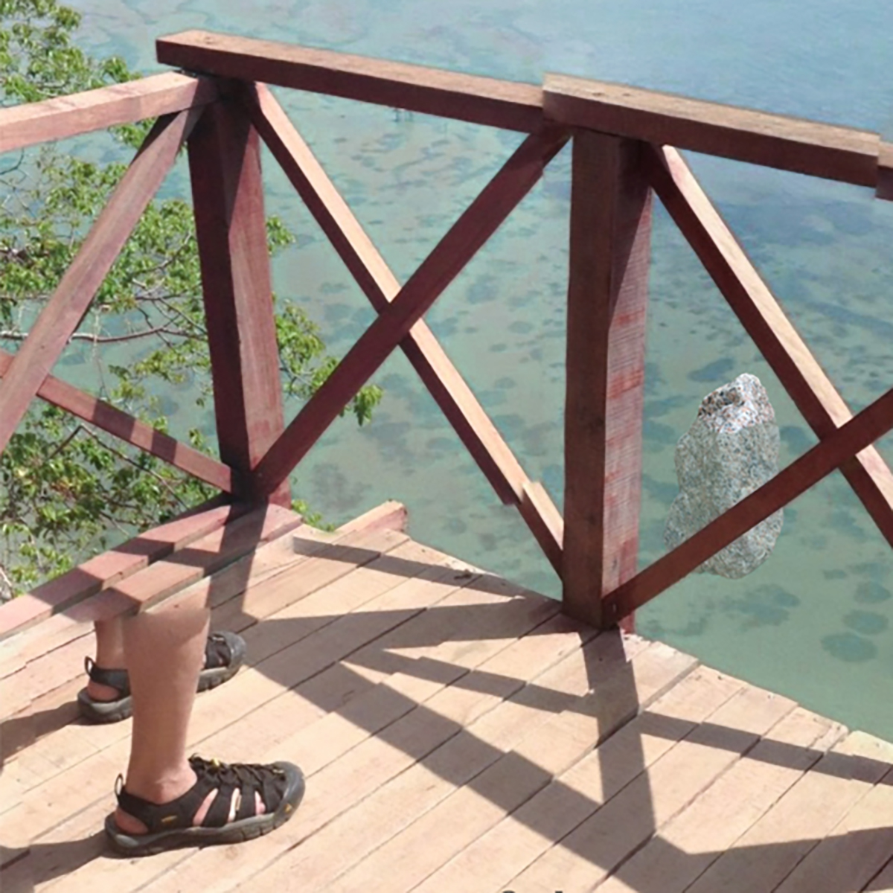
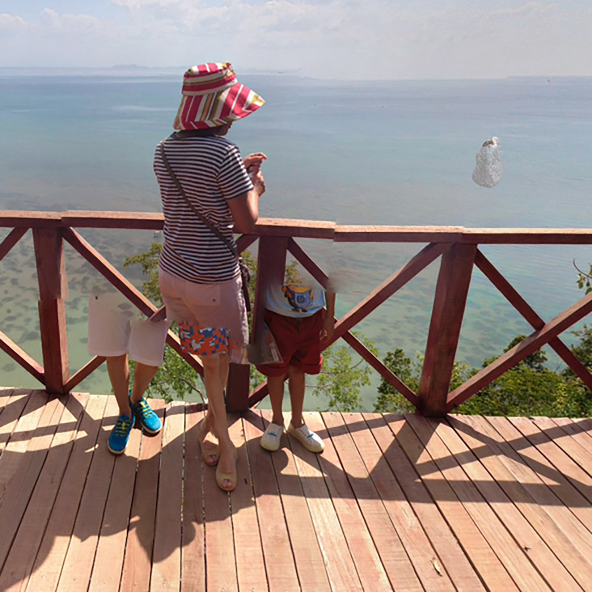
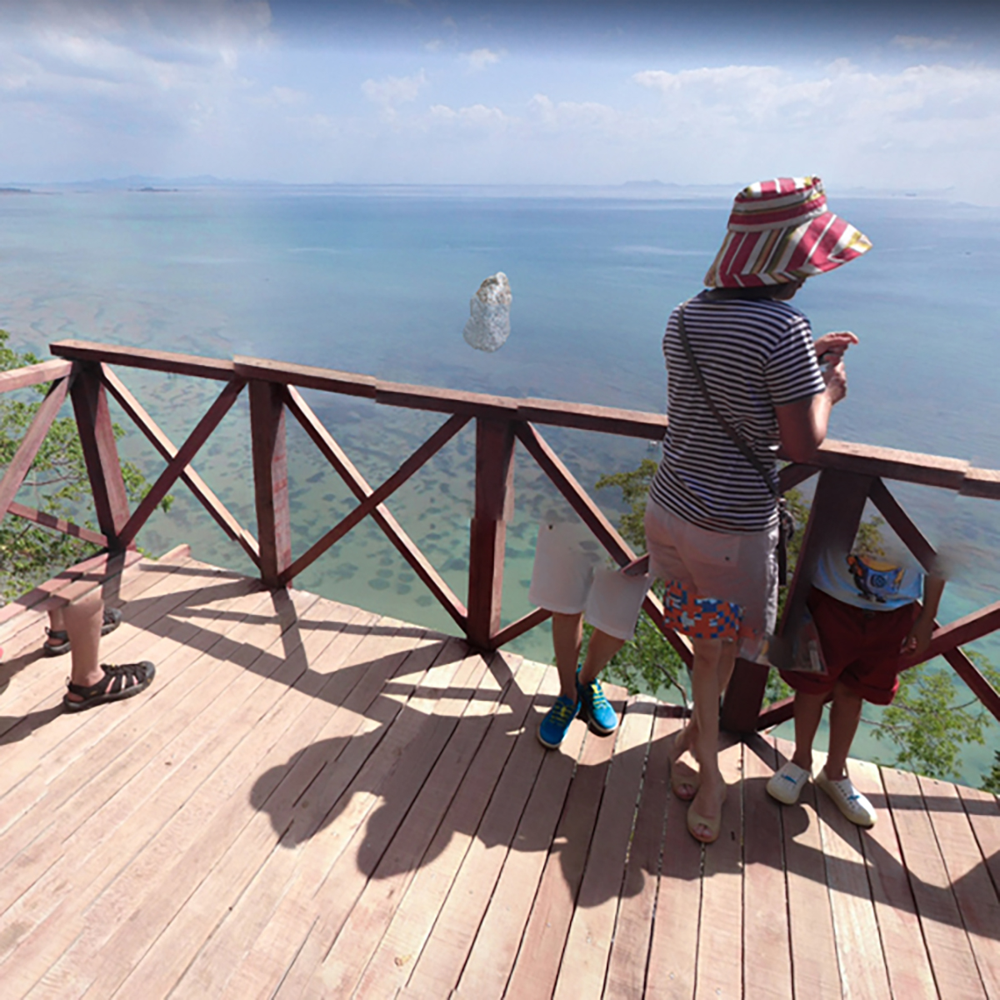

Ricordi di fauna selvatica durante un viaggio immaginario
screenshots series, variable dimensions and materials. (2019 - Ongoing).
Ricordi di fauna selvatica durante un viaggio immaginario displays an ongoing collection of visual memories of online imaginary journeys made with the aim of spotting wild animals.
To embark on an imaginary voyage can be easy. Wear what you think is best for the occasion, but my advice is to choose something comfortable: it is really difficult to predict the exact duration of the journey.


 




